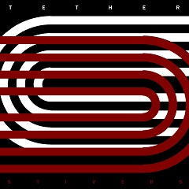

My name is Josh Stivers and I’m a local songwriter and guitarist from the Austin/San Antonio area.
I’ve been writing and recording at studios in Texas for over 15 years. I’ve worked with many amazing Texas artists and I’ve seen first hand how much care and craftsmanship goes into creating great locally based music. Musical artists that continue to operate in this new paradigm face unique challenges where essentially, consumers no longer feel that music should be paid for. Record companies work now in a distributing and marketing capacity only and artists are expected to bring a finished and fully produced product to their doorstep!
Please join me in supporting local artists like Brandon Soto and Chad Overman and leave a small tip or donation if you choose to download. This allows original and locally based musicians to continue to do what they do best. Thanks for stopping by!
